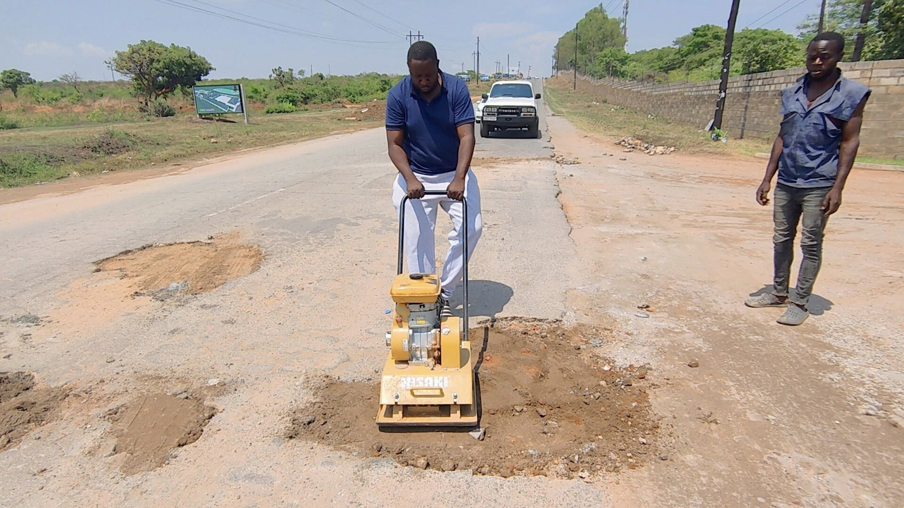

ACTIVELY PARTICIPATE IN KABULONGA WARD 19'S DEVELOPMENT

Become a Volunteer
Volunteering within Kabulonga Ward 16 can take many forms, but most of our volunteers serve as Citizen Engage Members. Family Members work directly withother volunteers to form a deeply woven extended network of care and support around the community and with each other. Click here to sign up.
JOIN THE CONVERSATION
Join the Conversation about your Community!
We believe that open and inclusive dialogue is crucial for building thriving communities. We invite you to join the conversation and be an active participant in shaping the future of your community. Click here and join the conversations on the councilor's facebook page, or here for conversations about Lusaka Central Constituency.